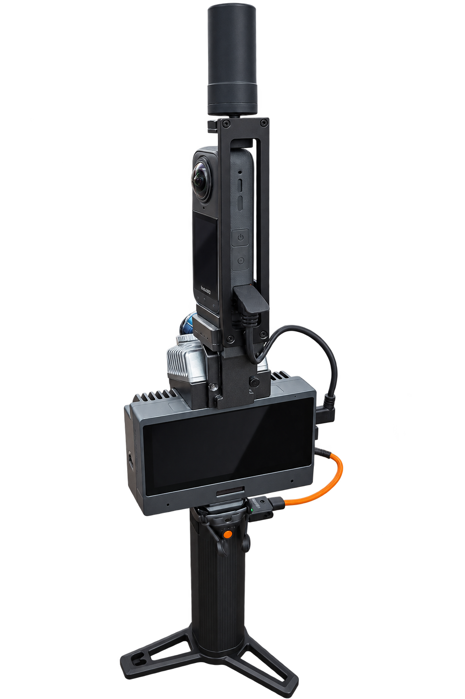
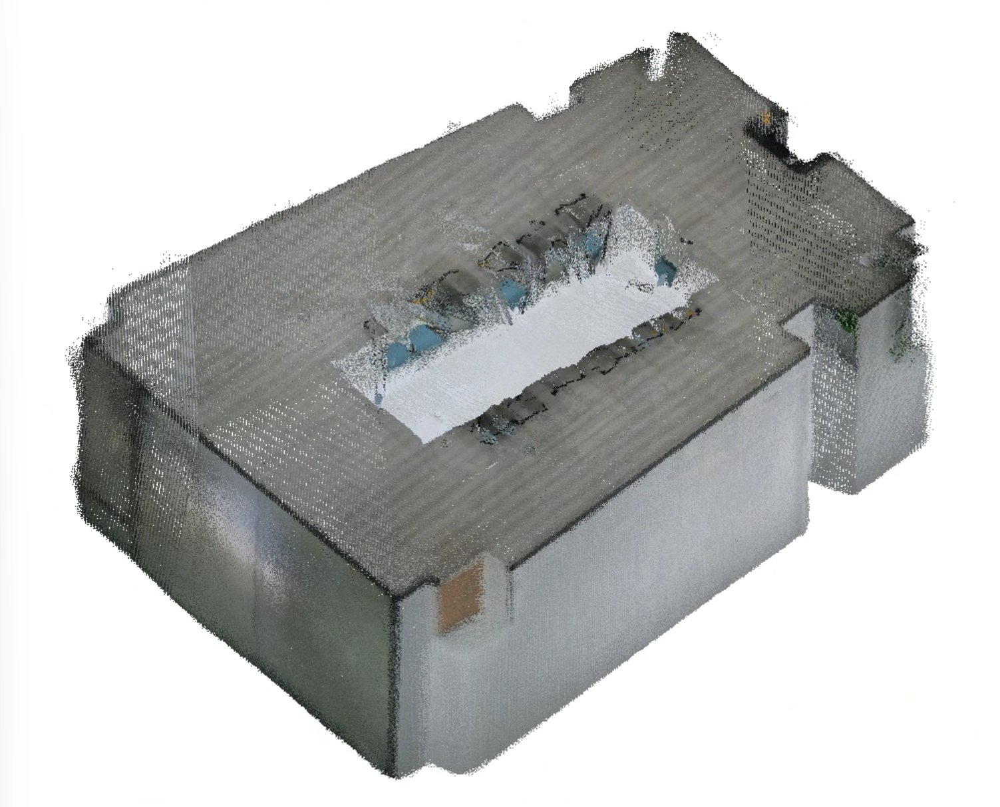
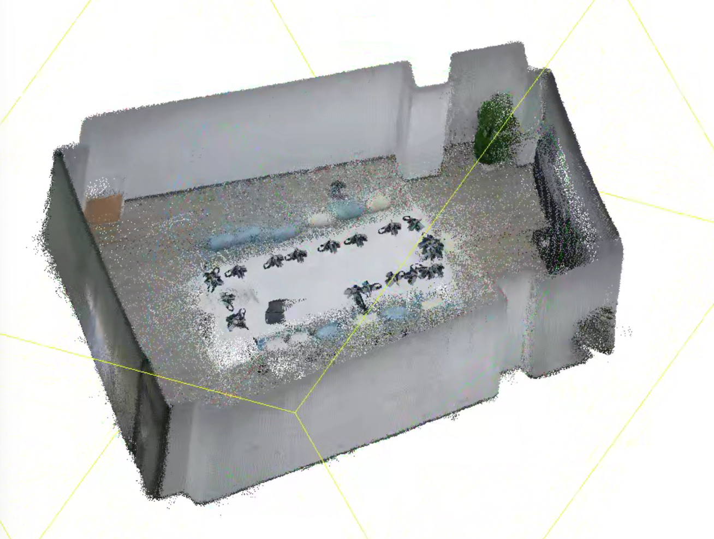

Feed-Forward 3D Reconstruction (Tutor: Jinming Pan, Wechat: 19905103483)
Introduction
The task of this project is to reconstruct an indoor room from a small set of images. You will capture the room from several positions with an Insta360 X5 and use a feed-forward method to produce a colored 3D point cloud.
Requirements
Basic Requirements
1> Capture a set of images of one indoor room with the Insta360 X5. Choose viewpoints that cover the room and provide overlap between images.

2> Use a feed-forward reconstruction method of your choice to reconstruct the room and export a colored 3D point cloud. You may use the captured panoramas directly or extract perspective views from them.


3> Show the input images and visualize the reconstructed point cloud from several viewpoints. Discuss which parts of the room were recovered and where the reconstruction is incomplete or inaccurate.
Advanced Requirements
4> Capture point clouds of the same room with a Livox MID-360. Calibrate the camera and LiDAR relative to each other and visualize the projected LiDAR points on the captured images.
5> Incorporate sparse LiDAR measurements into the feed-forward inference pipeline to recover the scale of the room in meters. Use the same input images to compare reconstructions with and without LiDAR, and explain how the measurements affect the result.
References
1> Wang et al. VGGT: Visual Geometry Grounded Transformer.
2> Keetha et al. MapAnything: Universal Feed-Forward Metric 3D Reconstruction.
3> Bedkowski et al. Method for Spherical Camera to 3D LiDAR Calibration and Synchronization with Example on Insta360 X4 and LiVOX MID 360.